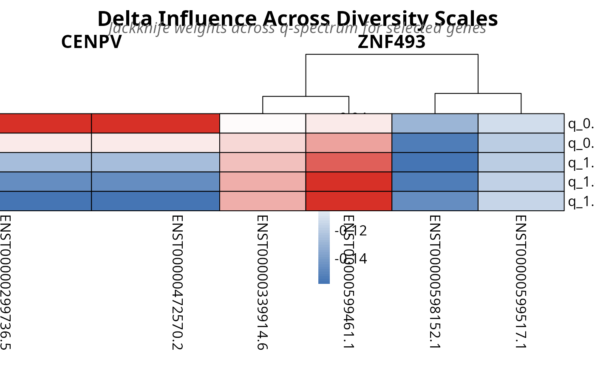

Plot Multi-Q Delta Influence Heatmaps from TSENATAnalysis Object
Source:R/s4_functions.R
plot_jis_delta.RdS4 wrapper for . plot_jis_delta() that
extracts results
directly from a TSENATAnalysis object. Automatically retrieves jackknife
switching
results from the analysis object slots.
Usage
plot_jis_delta(
analysis,
n_genes = 4,
lm_results = NULL,
verbose = FALSE,
output_file = NULL,
...
)Arguments
- analysis
TSENATAnalysis. An S4 object containing completed jackknife isoform switching analysis across multiple q-values.- n_genes
numeric. Number of top genes to display in heatmaps (default: 4). Genes are ranked by LM p-values if available, otherwise by order of appearance in results.- lm_results
data.frameorNULL. Optional LM interaction results for ranking genes (default: NULL). If NULL, attempts to extract fromanalysis@lm_results$lm_interaction.- verbose
logical. IfTRUE, print diagnostic messages during plot generation (default: FALSE).- output_file
characterorNULL. Optional file path to save the plot. Default: NULL (no file output).- ...
Additional arguments passed to the base function.
Details
This function extracts the following from analysis:
- Jackknife results
From
analysis@jackknife_results, which should contain multi-q switching results keyed by q-value (e.g., 'q_1.00')- LM results
From
analysis@lm_results$lm_interactionif not explicitly provided, for ranking genes by significance
The wrapper automatically handles parameter extraction and provides a simplified interface compared to the base function.
See also
calculate_jis for computing switching results
Examples
# Plot 5: Multi-q delta influence (isoform switching) heatmaps
data(readcounts)
readcounts <- as.matrix(readcounts)
mode(readcounts) <- 'numeric'
metadata_df <- read.table(
system.file('extdata', 'metadata.tsv', package = 'TSENAT'),
header = TRUE, sep = '\t'
)
gff3_dataset <- system.file('extdata', 'annotation.gff3.gz', package =
'TSENAT')
# Configure analysis parameters first
config <- TSENAT_config(
sample_col = 'sample',
condition_col = 'condition',
subject_col = 'paired_samples',
paired = TRUE,
control = 'normal',
q = seq(0, 2, by = 0.1)
)
# Build analysis with configured parameters
analysis <- build_analysis(
readcounts = readcounts,
tx2gene = gff3_dataset,
metadata = metadata_df,
config = config,
tpm = tpm,
effective_length = effective_length
)
analysis <- filter_analysis(analysis, stringency = 'severe')
analysis <- calculate_diversity(
analysis,
q = c(0.5, 1.0, 1.5, 2.0, 2.5),
verbose = FALSE
)
analysis <- calculate_divergence(
analysis,
q = c(0.5, 1.0, 1.5, 2.0, 2.5)
)
analysis <- suppressWarnings(calculate_lm(analysis, method = 'gam'))
analysis <- calculate_jis(
analysis,
q = c(0.5, 1, 1.5),
n_bootstrap = 50
)
heatmap_file <- plot_jis_delta(analysis, n_genes
= 2)
